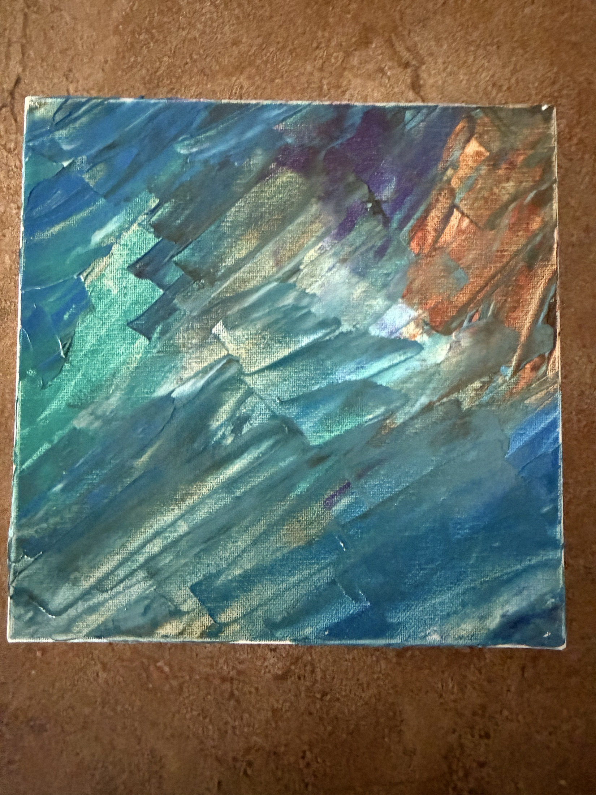

2026
Название стихотворения
Первая строка стихотворения может жить здесь как приглашение к полному тексту.
ЧитатьМаксим Вязовский
Стихи, картины, песни, видео, рассказы и немного жизни.
Место для того, что хочется сохранить живым...
$ whoami
maxim-vyazovsky
$ cat ./profile
poems + paintings + songs + stories
human-readable hacker archive
$ status
online / curious / buildingДобро пожаловать в мой личный архив. Здесь будут жить тексты, живопись, песни, видеозаписи и истории: немного кода, немного света, немного странной честности на полях обычной жизни.
архив текстов

новая работа
Пирамида как портал: древняя геометрия, синий воздух и плотный живой мазок. Работа выглядит ярче в крупном формате, поэтому вынесена первой.
2300$





видео и звук
Видео от 19 апреля 2026 года. Личная запись для раздела песен и выступлений.
Описание видеопроза
Отдельная страница для текста без рамок жанра: наблюдения, воспоминания, внутренний монолог или история, которая еще сама не решила, чем она станет.
Открыть страницунемного биографии
Максим Вязовский. Хакер по внутренней оптике: смотреть на систему, видеть скрытые связи, чинить то, что не обязано было ломаться, и иногда превращать это в текст.
На этом сайте рядом стоят картины, стихи, песни, видео и рассказы: не резюме, а карта того, что удалось заметить, прожить и собрать.